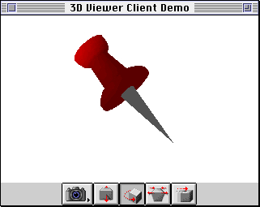
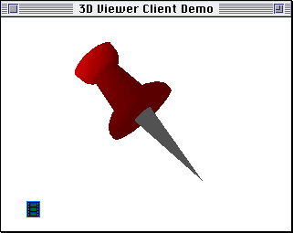

About the 3D Viewer
The 3D Viewer (or, more briefly, the Viewer) is a shared library that provides a very simple method for displaying 3D models, together with a set of controls that permit limited interaction with those models. Figure 2-1 shows an instance of the 3D Viewer displaying a sample three-dimensional model.Figure 2-1 An instance of the 3D Viewer displaying three-dimensional data

An instance of the 3D Viewer is a viewer object. Every viewer object is associated with exactly one window, within which the viewer object must be entirely contained. The viewer object can occupy the entire content region of the window, or it can occupy some smaller portion of the window. Your application can create more than one viewer object; indeed, it can create more than one viewer object associated with a single window.When a viewer object is first created and displayed to the user, it consists of a picture area that contains the displayed image and either a controller strip or a badge. The controller strip is a rectangular area at the bottom of the viewer object that contains one or more controls. (See the following section for a complete explanation of these controls.) A badge is a visual element that is displayed in the picture area when the controller strip is not visible. The user can click on the badge to make the controller strip appear.
- Note
- The 3D Viewer is currently available only on the Macintosh Operating System.
The part of the window that contains the picture area and the controller strip (if present) is the viewer pane (or viewer frame). In Figure 2-1, the viewer pane entirely fills the window's content region. Alternatively, you can place the viewer pane in part of the window; you would do this to embed a 3D picture in a document window.
It's important to understand that the 3D Viewer is built on top of QuickDraw 3D, but you don't need to call any QuickDraw 3D functions to use the 3D Viewer. The 3D Viewer is a shared library that is separate from the QuickDraw 3D shared library. You can call
Q3ViewerNew(and any other 3D Viewer functions) without having calledQ3Initializeto initialize QuickDraw 3D. The models displayed by the Viewer must be structured according to the QuickDraw 3D Object Metafile specification, but the metafile data can be stored either in a file or in memory.Controller Strips
The 3D Viewer provides control elements for manipulating the location and orientation of the user's point of view (that is, of the view's camera). Figure 2-2 shows a controller strip provided by the 3D Viewer.Figure 2-2 The controller strip of the 3D Viewer
These controls are, from left to right:
Your application controls which of these buttons are displayed in a viewer object's controller strip at the time you create the viewer object, by appropriately setting a viewer's flags. See Listing 2-2 on page 2-9 for an example of setting a viewer's flags.
- The camera angle button. This control allows the user to view the model from a different camera angle. Holding down the camera angle button causes a pop-up menu to appear, listing the available cameras.
- The distance button. This control allows the user to move closer to or farther away from the model. Clicking the distance button and then dragging the cursor downward in the picture area causes the displayed object to move closer. Dragging the cursor upward in the picture area causes the displayed object to move farther away.
- The rotate button. This control allows the user to rotate an object. Clicking the rotate button and then dragging the cursor in the picture area causes the displayed object to rotate in the direction in which the cursor is dragged.
- The zoom button. This control allows the user to alter the field of view of the current camera, thereby zooming in or out on the object in the model.
- The move button. This control allows the user to move an object. Clicking the move button and then dragging on the object in the picture area causes the object to be moved to a new location.
Badges
The 3D Viewer allows your application to distinguish 3D data from static graphics in documents by the use of a badge. Figure 2-3 shows a viewer pane with a badge.Figure 2-3 A 3D model with a badge

The badge lets the user know that the image represents a 3D model rather
than a static image. A badge appears when the viewer object is first displayed and thekQ3ViewerShowBadgeflag is set in the object's viewer flags. When
the user clicks the badge, the badge disappears and the standard controller strip appears.Your application can control whether the 3D Viewer displays a badge in a viewer pane by appropriately setting a viewer's flags. See "Viewer Flags" on page 2-12 for more information.